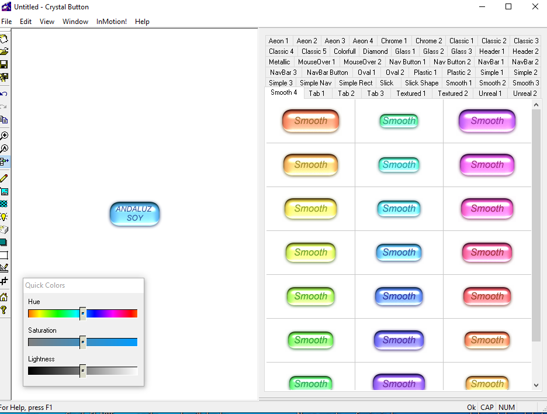
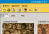
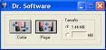
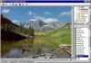
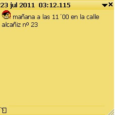

QuickTime Player 7.- Miles de aplicaciones emplean QuickTime para distribuir contenidos. Más de 250 dispositivos digitales incluyen QuickTime como reproductor recomendado. Miles de CDs multimedia permiten disfrutar al espectador una vivencia más allá de lo puramente musical.- 


Andaluzsoy